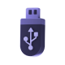

As the popularity of crypto gambling continues to grow, so does the importance of securing your digital assets. While the anonymity and ease of transactions make cryptocurrencies an attractive option for online gamblers, these features also make them a target for hackers and scammers. This guide will provide you with detailed strategies and best practices to ensure that your cryptocurrency remains secure while you enjoy gambling online.
-
Understanding the Risks
Before diving into the methods of securing your cryptocurrency, it's crucial to understand the risks involved in crypto gambling. These risks can be broadly categorized into three main areas:
- Hacking and Cyberattacks:Â Crypto wallets and exchanges are prime targets for hackers due to the irreversible nature of cryptocurrency transactions.
- Scams and Fraudulent Sites:Â The rise of crypto gambling has also seen an increase in fraudulent websites that aim to steal your funds through phishing and other scams.
- Human Error:Â Mismanagement of private keys, falling for phishing attempts, or sending funds to the wrong address can lead to permanent loss of your assets.
-
Wallet Security: The First Line of Defense
Your wallet is the most critical component in securing your cryptocurrency. Here's how you can ensure its safety:
A. Choose the Right Wallet
There are several types of crypto wallets, each offering different levels of security:
- Hardware Wallets:Â Devices like Ledger and Trezor are considered the safest option for storing cryptocurrency. They keep your private keys offline, away from potential hackers.
- Software Wallets:Â Wallets like MetaMask and Exodus are more convenient for frequent transactions but come with higher risks since they are connected to the internet.
- Paper Wallets:Â These are simply a physical printout of your private and public keys. While highly secure if stored correctly, they can be inconvenient and vulnerable to physical damage.
For crypto gambling, a combination of hardware and software wallets can be ideal. Store the bulk of your assets in a hardware wallet and keep only the amount you intend to gamble with in a software wallet.
B. Keep Your Private Keys Private
Your private key is the key to your cryptocurrency. Never share it with anyone, and avoid storing it digitally in places like cloud storage or your computer’s hard drive. For maximum security, write it down and store it in a secure location, such as a safe or a secure vault.
C. Enable Multi-Signature Wallets
Multi-signature (multi-sig) wallets require multiple private keys to authorize a transaction. This means even if one of your private keys is compromised, your funds remain secure. For instance, you can set up a 2-of-3 multi-sig wallet, where two out of three keys are required to complete a transaction. This adds an extra layer of security, especially if you are managing large amounts of cryptocurrency.
Hardware Wallets
Examples
Ledger Nano S, Ledger Nano X, Trezor Model T.
Security Level
High.
Convenience Level
Low.
Description
Hardware wallets are physical devices that store private keys offline, making them immune to online hacking attempts. They require physical access to the device to authorize transactions.
Arrow Label
Lower Security, High Convenience
Hardware Wallets
Examples
MetaMask, Exodus, Trust Wallet.
Security Level
Medium to Low.
Convenience Level
High.
Description
Software wallets are applications or browser extensions that store private keys online, making them more vulnerable to hacking. They are easy to use and accessible from any device with internet access.
Arrow Label
Lower Security, High Convenience
Hardware Wallets
Examples
A printed document with private and public keys (no specific brands).
Security Level
High (if stored properly).
Convenience Level
Very Low.
Description
Paper wallets involve printing out your public and private keys on a piece of paper, which is then stored offline. They are immune to online attacks but can be easily lost, stolen, or damaged.
Arrow Label
High Security, Very Low Convenience
-
Two-Factor Authentication (2FA): A Must-Have Security Measure
Two-Factor Authentication (2FA) adds an extra layer of security to your accounts by requiring a second form of verification in addition to your password. This is especially important when accessing your crypto gambling accounts or wallets.
A. Types of 2FA
There are several types of crypto wallets, each offering different levels of security:
- SMS-Based 2FA:Â While convenient, this method is vulnerable to SIM swapping attacks where hackers gain control of your phone number. It's advisable to avoid SMS-based 2FA for your crypto accounts.
- Authenticator Apps:Â Apps like Google Authenticator or Authy generate time-based one- time passwords (TOTP) on your phone. These are more secure than SMS-based 2FA as they are not tied to your phone number.
- Hardware 2FA:Â Devices like YubiKey provide the highest level of security by requiring a physical key to complete the authentication process. This is recommended for securing wallets or accounts with significant amounts of cryptocurrency.
B. Implementing 2FA on Crypto Gambling Sites
When using crypto gambling sites, always enable 2FA if the option is available. Most reputable sites will offer this feature to enhance the security of your account. If a site does not offer 2FA, it’s a red flag, and you may want to consider using a different platform.
Central CoreCryptocurrency
This central core symbolizes the crypto
assets being protected by the
layers of 2FA security.outer layerSMS-Based 2FA
Security Level LowestSMS-Based 2FA sends a one-time code to your mobile phone via text message. While convenient, it is vulnerable to SIM swapping attacks, where a hacker gains control of your phone number.
Middle LayerAuthenticator Apps
Security Level MediumAuthenticator apps like Google Authenticator or Authy generate time-based one-time passwords (TOTP) that are tied to your device. These are more secure than SMS-based methods because they are not connected to your phone number.
Innermost LayerHardware 2FA
Security Level HighestHardware 2FA devices like YubiKey provide the highest level of security. They require physical possession of the device to generate the authentication code, making it nearly impossible for remote attackers to breach.
-
Avoiding Scams and Fraudulent Sites
The decentralized and often unregulated nature of crypto gambling makes it a hotbed for scams. However, with a few precautions, you can significantly reduce your risk of falling victim to fraud.
A. Choose the Right Wallet
There are several types of crypto wallets, each offering different levels of security:
- Licensing and Regulation:Â Ensure the site is licensed and regulated by a reputable authority. While crypto gambling often operates in a gray area, some jurisdictions offer licenses to trustworthy operators.
- User Reviews and Reputation:Â Research the site's reputation within the gambling community. Sites like Coinbets offer user reviews and professional insights that can help you identify trustworthy platforms.
- Security Features:Â A secure site will offer features such as SSL encryption, 2FA, and a clear privacy policy. Avoid sites that lack these basic security measures.
For crypto gambling, a combination of hardware and software wallets can be ideal. Store the bulk of your assets in a hardware wallet and keep only the amount you intend to gamble with in a software wallet.
B. Beware of Phishing Scams
Phishing scams are a common way for hackers to steal your cryptocurrency. These scams often involve fake websites or emails that mimic legitimate services to trick you into entering your private keys or passwords.
- Double-Check URLs:Â Always double-check the URL of the site you are visiting. Scammers often create websites with URLs that are very similar to legitimate ones Avoid Clicking on Unverified Links:Â Never click on links in unsolicited emails or messages.
- Always navigate directly to the site by typing the URL into your browser.
- Use Anti-Phishing Tools:Â Many browsers and security software offer anti-phishing tools that can help detect and block fraudulent sites.
C. Scam ICOs and Token Projects
While not directly related to gambling, many users who are active in the crypto space may encounter fraudulent Initial Coin Offerings (ICOs) or token projects. Be wary of any projects that promise guaranteed returns or seem too good to be true. Always do thorough research and seek out third-party reviews before investing in any new token or project.
Spotting Phishing ScamsKey Warning Signs to Protect Your Crypto
Suspicious URLs
Legitimate URL
https://www.trustedsite.comDescription
Highlight how phishing sites often use URLs that closely resemble legitimate ones, with small, hard-to-notice differences such as altered characters or additional words.
Unverified Links
Legitimate Link
https://www.knownsite.com An email from a known contact or company with a clear, recognizable URLPhishing URL
https: //bit.ly/2xyzABC A shortened or obfuscated link that does not match the sender's domainDescription
Explain how phishing attempts often use shortened or masked URLs to trick users into clicking on malicious links.
Fake Emails
Legitimate Link
support@trustedsite.com A professional email with proper branding, language, and sender addressPhishing URL
support@trvsteds1te.com An email with grammatical errors, generic greetings (e.g., "Dear Customer"), and a suspicious sender addressDescription
Highlight how phishing emails often contain subtle mistakes like misspellings, improper branding, and generic greetings. Also, they might come from email addresses that closely mimic legitimate ones but with slight alterations.
Urgent Calls to Action
Legitimate Link
Please verify your account within 7 days. A normal request with reasonable time framesDescription
Highlight how phishing emails often contain subtle mistakes like misspellings, improper branding, and generic greetings. Also, they might come from email addresses that closely mimic legitimate ones but with slight alterations.
-
Data and Statistics: The Growing Need for Security in Crypto Gambling
The rise of crypto gambling has been accompanied by an increase in related cybercrimes. According to a report by CipherTrace, crypto-related crime surged in 2023, with over $3.5 billion lost to hacks and scams, a significant portion of which targeted online gambling platforms.
In a survey conducted by Chainalysis, 41% of crypto users cited security as their primary concern when engaging in online gambling. This underscores the importance of adopting robust security measures to protect your assets.
-
Best Practices for Securing Your Cryptocurrency
Here’s a consolidated list of best practices to ensure your cryptocurrency remains safe while gambling online:
- Diversify Your Holdings: Spread your cryptocurrency across multiple wallets. This reduces the risk of losing everything in case one wallet is compromised.
- Regularly Update Your Security Measures: Cybersecurity is an ever-evolving field. Regularly update your software wallets, authenticator apps, and security tools to ensure they have the latest security patches.
- Limit the Amount at Risk: Only keep a small portion of your cryptocurrency in your gambling wallet. This minimizes your potential losses in case of a security breach.
- Backup Your Wallets: Regularly back up your wallets and store these backups in secure, offline locations. This ensures you can recover your funds in case your primary wallet is lost or damaged.
- Stay Informed: Keep up with the latest news and developments in both the cryptocurrency and online gambling industries. Being aware of new threats and scams can help you take preemptive action to protect your assets.
-
Case Study: A Real-Life Example of Security Breach in Crypto Gambling
To highlight the importance of these security measures, let's look at a real-life example:
In 2022, a popular crypto gambling site fell victim to a sophisticated phishing attack. Hackers created a fake version of the site and managed to trick users into entering their login credentials. Over 1,000 users lost their cryptocurrency as the hackers drained their accounts. This incident underscores the need for vigilance, the use of 2FA, and the importance of only visiting trusted sites.
Spotting Phishing ScamsKey Warning Signs to Protect Your Crypto
STEP 1Creation of a Fake Site
STEP 2User Enters Credentials
The unsuspecting user enters their credentials, believing they are logging into a legitimate site.
STEP 3Hackers Steal Funds
Hackers gain access to the user's account and steal their funds, transferring them to their own wallet.
-
Conclusion
Securing your cryptocurrency while gambling online is not just about following a checklist-it's about adopting a mindset of vigilance and caution. As the crypto space continues to evolve, so too will the threats. By implementing the strategies and best practices outlined in this guide, you can significantly reduce your risk and enjoy the benefits of crypto gambling with peace of mind. Remember, in the world of cryptocurrency, you are your own bank. The responsibility for securing your assets lies entirely with you. Stay informed, stay secure, and gamble responsibly.